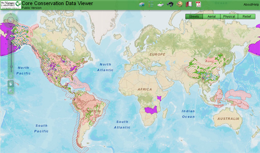
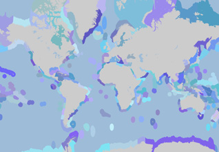
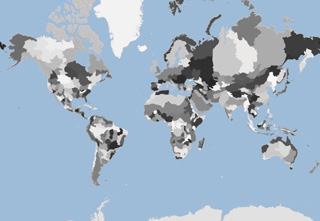
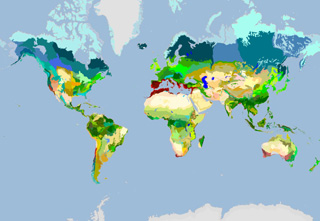
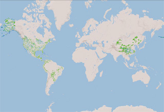
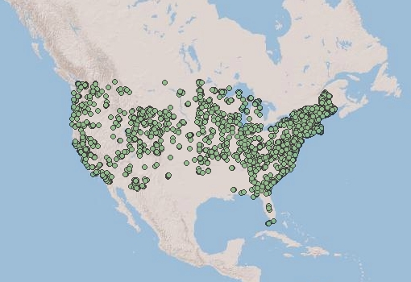

navbar
HOME
GIS DATA
MAPS
ABOUT
×
Conservation Maps and GIS Data
We provide GIS data and maps for The Nature Conservancy's core conservation datasets, including:

Ecoregional Assessment Portfolio
TNC Lands
Ecoregions




